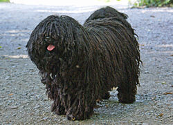

Puli
A puli története messzire nyúlik vissza. Már a Kr. e. 4. évezredből maradt ránk olyan sumer szobor, amely egy pulihoz nagyon hasonlító kutyát ábrázol. Annyi bizonyos, hogy őseinkhez valamikor ázsiai vándorlásuk közben került, s együtt érkeztek a Kárpát-medencébe, ahol évszázadokig mint a pásztorok hű segítője szerzett magának hírnevet. Más forrás szerint a „...puli őseinek csontjai a régészeti ásatásokon nem kerültek elő a honfoglalás kori, de még az Árpád-kori leletek között sem. Helyette nagy testű, agárra emlékeztető kutyák maradványaira bukkantak a régészek.” Első leírója Heppe volt 1751-ben, és utána sokan megemlítik írásaikban a puli bozontos szőrét, hihetetlen intelligenciáját és munkabírását. Az 1900-as évek elején megváltozott a mezőgazdaság szerkezete, csökkent a legelők területe és ezzel a puli munkalehetősége is. A kipusztulástól Raisits Emil és munkatársai tevékenysége mentette meg. Egyre kevesebb kutya maradt meg eredeti munkakörénél, a puliból sztárfajta lett. Példányai bekerültek a tanyákra, falvakba, városokba, mint házőrzők, testőrök vagy kedvencek, esetleg rendőrkutyák. 1935-ben Anghi Csaba vezetésével állították össze a fajtaleírását. A második világháború a nagy létszámú, erős populációban nagy károkat nem tett, de a tenyésztést néhány évre visszavetette. Az 1960-as években elkezdődött a puli tervszerű tenyésztése Ócsag Imre vezetésével, aminek során a fehér, majd a szürke és a maszkos fakó szín kitisztult, a szőrzet minősége javult. Ma a puli, úgy tűnik, visszatalál eredeti foglalkozásához, hiszen az 1990-es évektől kezdve kerülnek megrendezésre a terelési ösztönpróbák, amelyeken pulik is részt vesznek. Bebizonyosodott, hogy a hosszú ideje megváltozott körülmények között élő pulinak a legkevesebb a terelőhajlama a három terelőkutyafajta közül, de a helyzet azóta sokat javult. A külföldi fajták térnyerése mellett a puli népszerűsége sokat csökkent az utóbbi években, de ez megakadályozza azt is, hogy a fajta túltenyésztett divatkutyává váljon. A puli legfeltűnőbb sajátossága a páratlan szőrköntöse, amihez hasonló csak a szintén magyar puminak van. Szőrszíne lehet fekete, fehér, fakó és a szürke különféle árnyalatai. A szőre lehet szalagos, zsinóros jellegű, nemezes, gubancos, nyílt, sima, selymes. Dús szőrzettel borított gömbölyű feje alig különül el testétől, mert nyaka a hosszú szőrzet miatt szinte nem is látható. Arcorri része rövidebb, mint az agykoponyai része, orrháta egyenes, orrtükre viszonylag nagy, fekete. Állkapcsa fejlett, fogazata erőteljes, metszőfogai ollósan záródnak. Szeme sötétbarna, értelmes tekintetű. Füle széles, lekerekedő, lelógó, szinte észre sem vehető. Háta egyenes, feszes, középhosszú. Ágyéka rövid, egyenes, rendkívül feszes. Farka az ágyéktájékra visszakunkorodik; hosszú szőrzet borítja, ezért szinte beleolvad a far szőrzetébe. Mellkasa hosszú és mély. Hasa enyhén felhúzott. Mellső végtagjai szikár izomzatúak, egyenesek, párhuzamosak. A hátulsó végtagok is jó izomzatúak. A csánk szikár. Mancsa erős, kerekded, karmai feketék vagy palaszürkék.